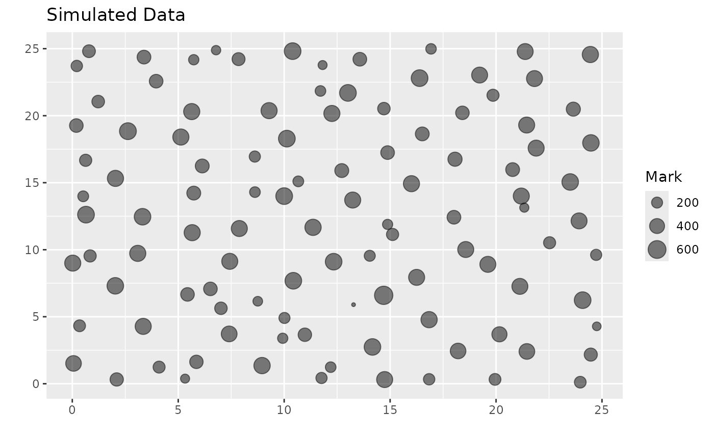

Simulate a realization of a location dependent marked point process
Source:R/simulate_mpp.R
simulate_mpp.RdSimulate a realization of a location dependent marked point process
Usage
simulate_mpp(
process = c("self_correcting"),
process_fit = NULL,
t_min = 0,
t_max = 1,
anchor_point = NULL,
raster_list = NULL,
scaled_rasters = FALSE,
mark_model = NULL,
xy_bounds = NULL,
include_comp_inds = FALSE,
competition_radius = 15,
edge_correction = "none",
thinning = TRUE,
seed = NULL
)Arguments
- process
type of process used (currently supports
"self_correcting").- process_fit
either (1) a
ldmppr_fitobject returned byestimate_process_parameters, or (2) a numeric vector of length 8 giving the self-correcting process parameters: \((\alpha_1,\beta_1,\gamma_1,\alpha_2,\beta_2,\alpha_3,\beta_3,\gamma_3)\) (alpha_1, beta_1, gamma_1, alpha_2, beta_2, alpha_3, beta_3, gamma_3).- t_min
minimum value for time.
- t_max
maximum value for time.
- anchor_point
(optional) vector of (x,y) coordinates of the point to condition on. If
NULL, inferred from the reference data (largest mark if available) or fromprocess_fit$data_original(largest size).- raster_list
a list of raster objects used for predicting marks.
- scaled_rasters
TRUEorFALSEindicating whether the rasters have already been scaled.- mark_model
a mark model object. May be a
ldmppr_mark_modelor a legacy model.- xy_bounds
(optional) vector of bounds as
c(a_x, b_x, a_y, b_y). IfNULL, will be inferred fromreference_data's window whenreference_datais provided, otherwise fromldmppr_fitwith lower bounds assumed to be 0.- include_comp_inds
TRUEorFALSEindicating whether to compute competition indices.- competition_radius
distance for competition radius if
include_comp_inds = TRUE.- edge_correction
type of edge correction to apply (
"none"or"toroidal").- thinning
TRUEorFALSEindicating whether to use the thinned simulated values.- seed
integer seed for reproducibility.
Examples
# Specify the generating parameters of the self-correcting process
generating_parameters <- c(2, 8, .02, 2.5, 3, 1, 2.5, .2)
# Specify an anchor point
M_n <- c(10, 14)
# Load the raster files
raster_paths <- list.files(system.file("extdata", package = "ldmppr"),
pattern = "\\.tif$", full.names = TRUE
)
raster_paths <- raster_paths[!grepl("_med\\.tif$", raster_paths)]
rasters <- lapply(raster_paths, terra::rast)
# Scale the rasters
scaled_raster_list <- scale_rasters(rasters)
# Load the example mark model
file_path <- system.file("extdata", "example_mark_model.rds", package = "ldmppr")
mark_model <- load_mark_model(file_path)
# Simulate a realization
example_mpp <- simulate_mpp(
process = "self_correcting",
process_fit = generating_parameters,
t_min = 0,
t_max = 1,
anchor_point = M_n,
raster_list = scaled_raster_list,
scaled_rasters = TRUE,
mark_model = mark_model,
xy_bounds = c(0, 25, 0, 25),
include_comp_inds = TRUE,
competition_radius = 10,
edge_correction = "none",
thinning = TRUE
)
# Plot the realization and provide a summary
plot(example_mpp, pattern_type = "simulated")

summary(example_mpp)
#> Length Class Mode
#> process 1 -none- character
#> mpp 6 ppp list
#> realization 4 data.frame list
#> params 8 -none- numeric
#> bounds 3 -none- list
#> anchor_point 2 -none- numeric
#> thinning 1 -none- logical
#> edge_correction 1 -none- character
#> include_comp_inds 1 -none- logical
#> competition_radius 1 -none- numeric
#> call 14 -none- call
#> meta 2 -none- list